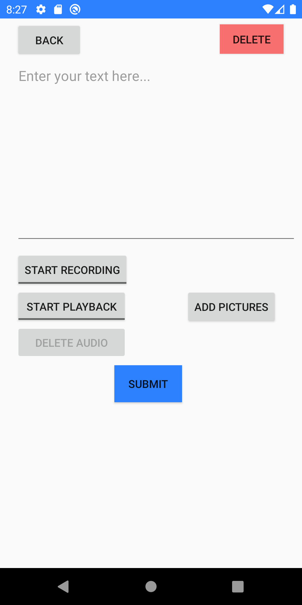

|
DailyJournal11 |
External link to .apk: https://github.com/JonDoerr/Daily-Journal-11/raw/main/DailyJournal11.apk
External link to source zip: https://github.com/JonDoerr/Daily-Journal-11/archive/main.zip
Description
DailyJournal11 is a simple journaling app with some added features. A standard journaling or notes app will allow the user to record text for each entry. DailyJournal11 can record your speech and pictures, like a selfie. The app can allow the user to add new entries, view old entries, and record microphone, text, or image data with each entry. The app includes a daily notification reminder feature which will send the user a notification to remind them to a record a journal entry for the day. All data will be linked to a user's account so they can sign in on any device and still have access to their journal entries.
Login
Users will have the option to log in or register for an account. Their account will store their journal entries online so that they can access them on any device. Once the user registers, they will be sent a verification email that they must accept in order to confirm their account. Once this is done, they will be able to log in. There is also an option for users to reset their password at the login page. Additionally, once the user is logged in, they will have the option to fully delete their account in the app options.
Main Page
The main page will present the users with all of their previous journal entries. They will be able to click on old entries, change the ordering of the entry list, or add a new journal entry. By clicking on the menu in the top right, the users will also be able to access the options or log out.
New Journal
When adding a new journal entry, users will have the option to add text, an audio snippet, or a photo to their journal entry. They will also be able to delete any previously made journal entries. When viewing a previous entry, all the associated data (including audio and image data) will be included.
Options
The options menu has two selections available to the user. They can schedule a daily reminder notification that will alert the user with a friendly reminder to record their journal entry at any specified time of the day. They also have the option to delete their account should they choose to.
 |
 |
External link to YouTube video:
https://youtu.be/OQ0Ah7VY18I